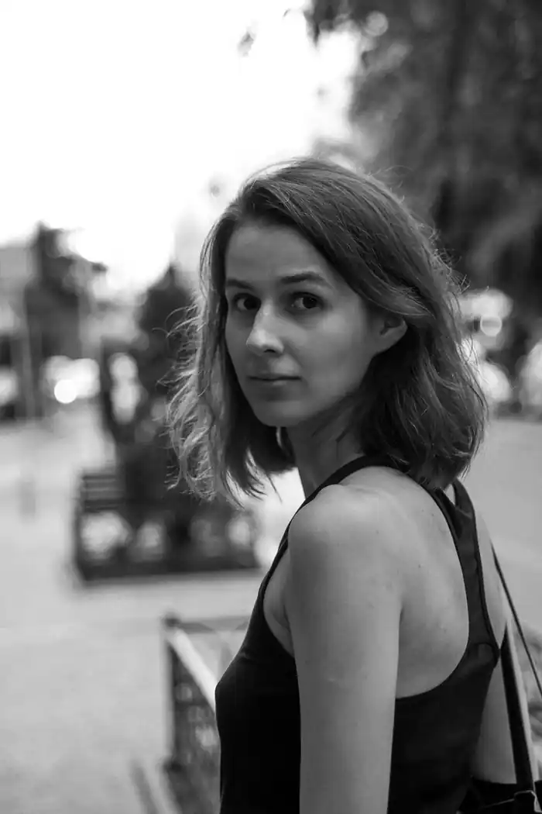

Народилася в Києві 5 червня 1995 року. Закінчила бакалаврат з полоністики в КНУ імені Тараса Шевченка та бакалаврат із журналістики в Ягеллонському університеті в Кракові.
У дитинстві захоплювалася вигадуванням історій і казок, пізніше почала їх записувати. У 16 років видала дебютну книжку для дітей — повість "Сестричка", що вийшла у "Видавництві Старого Лева". 2012 року книжка увійшла до "Довгого списку" премії "Дитяча книга року ВВС-2012" та отримала нагороду "Дитячий вибір" на Міжнародному літературному фестивалі у Львові.
2014 року у тому ж видавництві вийшла друга дитяча повість — "Сімейка Майї". 2018 року вийшла її третя книжка — підліткова повість "34 сонячні дні і один похмурий". Сценічна адаптація повісті "34 сонячні дні і один похмурий" Ірини Шамахіної зайняла 1 місце у конкурсі "Книжка на сцені" (2019). У 2019 році вийшла четверта книжка "Мія і місячне затемнення", що увійшла до короткого списку "Книги року ВВС-2019" та номінувалася на "Топ Барабуки-2019" (короткий список). Також книжка потрапила до короткого списку нагороди "Еспресо-вибір читачів". Кіносценарій за книгою "34 сонячні дні і один похмурий" у співавторстві з Валерієм Пузіком увійшов у фінал премії Коронація слова. У 2022 на початку повномасштабного вторгнення Росії в Україну у Видавництві Старого Лева вийшла книжка "Абрикоси зацвітають уночі". Події в історії розгортаються у 2015 неподалік від окупованого Донецька, але після 24 лютого 2022 року почуття, що переживають головні герої, резонують у мільйонів дітей та дорослих по всій країні. Писала для видань "Nowa Europa Wschodnia", "Ha!art", "Політична критика", проекту "Cafebabel", порталів "БараБука" та "ЛітАкцент". Журналістка і ведуча "Громадського радіо", перекладає з польської мови.